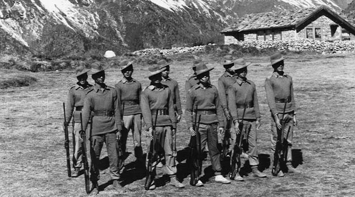
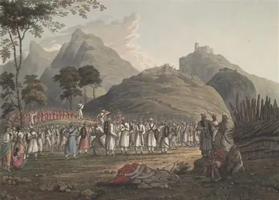

NEPAL'S HISTORY

GLORIOUS HISTORY IN THE WORLD
Nepal had the world's most popular and bravest history.
Nobody could ever take over nepal.That already gives the whole explaination about the bravery of Nepal,Nepali soldiers
and even Nepali citizens because Nepali citizens had also fought really bravely during 'Anglo-Nepal' war.
Know about this exquisite history.
LEARN ABOUT THE MOST GRAND AND GLORIOUS HISTORY.
"JAI NEPAL"

Long before Nepal was unified, the hills and valleys of the Himalayas were home to brave kingdoms, skilled warriors, and resilient communities. From the powerful Malla rulers of the Kathmandu Valley to the fearless defenders of ancient hill states, Nepal's history is a story of courage, independence, and enduring cultural strength.
